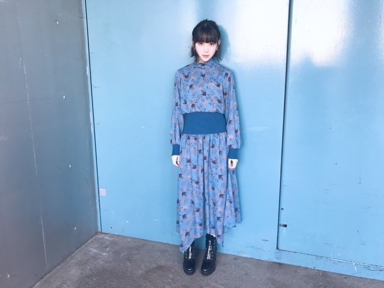

2018/1022Monchu chu

こんにちは！
10月15日生まれの人の
ラッキーカラーが
乃木坂色の 紫と聞いて
縁起がいい〜と感動している今日この頃です
☺︎
ラッキーアイテムとか
ラッキーカラーを取り入れたくなるタイプです
と、いいつつ生誕Tは黒！笑

握手会で さっそく生誕T 着ました！
皆さんとおそろい♡
ファンの皆さんもかわいくコーディネートして
着てくださっていて嬉しいです。
男性なら上におっきめの黒ブルゾン羽織って
サングラスとかしてもいいし
黒のタートルを中に着て
ズボンにtシャツを軽くインしてベルトして
マーチン(ごつめスニーカー)とかもかわいい！
女性ならショートパンツ履いて
tシャツワンピみたいにみせるのもいいし
白とかグレーのロングスカート合わせて
スニーカーも可愛いと思います☺︎
自分がデザインした服ってやっぱり
テンションあがりますね。
いつかいろんな服もプロデュース
してみたいなぁ☺︎
私服は

ブルー！私のマイブームカラー！
earring...SAINT LAURENT
onepiece...MURUA
boots...ZARA
メイクは新作コスメを早速使って
くすみピンクとラメたっぷりの
儚げ秋メイクにしてみました〜 〜
口紅は、秋冬はオレンジに挑戦したくて
SUQQUの
モイスチャーリッチリップスティック07
シャドウは
クラランスのイルミネイティングパウダーを
瞼全体に塗ってから
SUQQUのデザイニングカラーアイズ04の
左上の色を重ねて二重幅に右上の色を重ねて
左下の色を涙袋に塗りました
ナチュラルなキラキラが
最近すきです☺︎
ブルーの写真を撮ってくれたのは葉月♡
いつも私服好きって言ってくれる
かわいい妹です。


次のブログでは生誕祭のことを
書く予定です！
お待ちを。
そしてそして
次の握手会はハロウィンが近いのでなにかの
コスプレをしようか否かで迷っています。
コスプレ案がありましたら
教えてください！！
かぼちゃ以外で！！
では☺︎
2018/10/22 12:42


コメント(529)
左手にパワーもらったから絶対いいピッチングできる
昨日、今日と天気が良く空が綺麗でしたね。
呼応するかのように、堀さんのテンションも上がって、自分も気持ち良いです。
薄紫のニットとかも似合いそうですね。
今年の神宮初日の時、慣れずにサイリウムを紫にしていた時に、堀さんが会場を見回していて、焦ったのを思い出しました。
握手会には行きませんでしたが、その日は生誕Ｔ着て過ごしました。
堀さんが着ると可愛く見えます。
自分は、ファッションには疎いので、プロデュースして欲しいです。
自分のはさて置き、堀さんなら持ち前のセンスで、かなり手腕を発揮できるのでは。
フェルメールブルーを彷彿させますね。
ブルーは、自分も大好きです。
持ち前も何点かだし、犬のカラーやリードもブルー。
向井さんとのショット、お互い可愛いですね。
勿論、堀さんの方が可愛いとは、そっとお伝えします。
コスプレは、フランス人形。
他にも浮かんだから、また書きますが、結構真剣に見たいかも。
朝晩は寒いので、気をつけて下さいね。
頑張って行きましょう！
生誕Ｔシャツ、着て外出しましたよ！
最近は乃木坂関連のＴシャツ着てると、
乃木坂ファンですか？と声かけられます。
知名度は、どんどん上がってますね！！
なんでもいいんだったらDisneyのカチューシャしてほしいなぁ
欅坂にも何人かしてる子いるから
やっぱみおりんが見てみたいです！
時の流れを感じる おれは老けてるるる
いつも楽しく読んでます！
青未央奈もとても可愛いですね！！
メイクとの相性がいい感じです！！
次回のブログはとても楽しみです！w
ハロウィンのコスプレはクロネコが似合いと思います!!
お仕事大変だと思いますが、頑張ってください‼
大好きです！！
応援しています！！！
ちょっと忙しくて、ま後でちゃんとコメント書くけど取り急ぎ♬
みおTね！私もだいぶコーデしたのだけど、体調悪かったのであったか黒ニットで握手会行きました。でもバッチは付けてたし、中にはみおT着てたんだよ！
男の子コーデのことも書いてくれるのいいね！特にしたのコーデはすごく分かる！^ ^
たまたま私がドクターマーチンのブーツは履かない派閥の人間なので全く同じは出来ませんが、すごくよく分かるコーデだと思います♬
あと未央奈の私服のブルーの！！これ本気で凄く綺麗で似合ってました！！！ガチで！！！マジで！！！
未央奈は引きで自分見れないから横の姿とか見えないと思うけど、とてつもなくシルエットラインが美しくて、凄く大人の清楚な美しさみたいなのが凄くでてました！！！
私の周りにいた未央奈推しじゃないだろう人も「え、なに？堀めっちゃ綺麗じゃね？？」とか言ってて、私がドヤ顔でした笑
この日のブログまたぜひ書いて！楽しみに待ってまーす♬またコメントしまーす！！^ ^
生誕T普段でも着やすくてありがたい。
いろんな生誕Tコーデを考えてて未央奈はおしゃれだなあと思う。
昨日の4部5部に行った時はブルーの服だったけど、生誕Tにタイトめのミニの未央奈も可愛い！
僕は次の握手会行けないのが残念です。
最近は青色にハマっている
堀未央奈さんブログ更新ありがとう⁉︎
生誕Tシャツ可愛いね⁉︎
よく似合ってます⁉︎
メイクへのこだわり凄いね⁉︎
またメイク披露してね⁉︎
昨日の乃木中楽しかったよ〜⁉︎
久しぶりに画伯の絵見れて
よかった⁉︎よかった⁉︎^_^
年々足長くなってスタイルよくなっていっている気がするのは気のせいですか？？
握手会行けないけどコスプレ気になる～！
ちょっとぶかぶか感あるかなと思ったけど、着こなし方が素敵ですね。すそをインすることでシュッと見せれるんだね、なるほど〜勉強になります
私服のブルーも良き感じです。
歌番組の衣装感があるなと感じましたが、肌の白さも相まって妖精感にあふれてる感じが好きですね
終始可愛いが異常でした！w未央奈のファッション系のブログほんとに勉強になる！！俺もオシャレに着こなしたりしてみたいなぁ！
羨ましい～♪
握手会お疲れさま！
生誕Tシャツお洒落だね。私服も可愛い！
コスプレは、十二単とかどう？笑
ぜったいに握手会いく！はなしたい(；；)♡♡
私服やっぱり可愛いです!!
魔女とかどうでしょう?
多分どれを着ても可愛いのは変わりませんが
これからも頑張ってください！!
乃木中でのみおなの紙芝居の自信、凄く面白かった＼(^o^)／
金の斧銀の斧のストーリーをちゃんと知らなかったんだね(^_^;)
金の斧銀の斧は簡単に言うと、正直者は得をするってストーリーだから覚えておいてね(^o^)／
それじゃ、またね(^o^)／
久しぶりに葉月ちゃんとのツーショット見れました
色んなメンバーとのツーショットまたアップしてください
楽しみにしてます
僕は服にあまり知識がないので全身プロデュースしてほしい！
彼女とそーゆーデートするのが夢なんです☺️
いつか、、、未央奈さんと、、
次の更新待ってます！✨
めちゃめちゃがちのキョンシーじゃなくても、中華なワンピースとか絶対未央奈に似合うと思う
検討お願いします（＾＾）
遅らばせながら、22歳の誕生日おめでとうございます‼
未央奈推しになってから4年経ちましたが、綺麗になったし、大人になったなと感じております。すっかり成長してドンドン遠くへ行ってしまうような気がします。
生駒ちゃんが卒業し、伊織が卒業し、今年はもうないだろうと思っていたら、なーちゃん、若様、愛未先輩までもが卒業を発表し寂しくなります。まだ、みおちゃんは卒業しないよね！
今後もフロントになって、さらにセンターを目指してほしいな。外仕事では、ドラマや舞台にもまた出てほしいです。
映画〝ホットギミック”楽しみにしています。
これからも体調に気を付けて、パフォーマンスに外仕事に頑張ってください。応援しています！！！
改めて、誕生日おめでとうございます♪
10月15日生まれの人のラッキーカラーは、紫なんですね!!
755にもその旨のコメントがあったのを見かけました。
やっぱり、グループのイメージカラーがラッキーカラーって嬉しいですよね♪
未央奈も、比較的よく紫色の服を身にまとっている印象があります。
先日も、紫色のニットを着ていましたね♪
ブログに載せてくれている、私服のブルーのドレス。
これも、光の加減によっては少し紫がかって見えます♪
むしろ、未央奈の中のラッキーパワーがそう見えさせるのかもしれませんね…!!
さてさて、次の握手会は、ハロウィンらしくコスプレする予定なんですね♪
う～ん、何がいいかなあ。
やっぱり実際に会う身としては、笑いや奇抜さよりも、どうしても可愛く見えることを重視してしまいますね（笑）。
そう、例えば、魔女の宅急便のキキ!!
もしくは、黒猫のジジ（笑）。
想像するだけで、どっちも可愛いですね♪
あとは、エンジェルもいいかなあ。
未央奈は白がとってもよく似合うので、可愛いこと間違いなし…!!
そして、未央奈のかわいい妹、葉月ちゃんに言わせると、金の斧と銀の斧を持って池から出てきたのは天使様らしいので（笑）、両方の斧を持って握手に臨みましょう♪
会話に詰まったときは、どっちの斧を落としたか聞いてみましょう（笑）。
今週末、未央奈がどんな仮装をしてくるか、楽しみにしてます!!
ではでは、また。
明日も未央奈にとっていい1日になりますように♪
可愛い！
黒猫なんてどうですか？
あいほ
初めてコメントしました。今度制服を着るのでみおなちゃんの制服がみたいです！参考にさせて下さい！お願いします！ちなみに握手会にまだ行けそうにないので写真をブログに上げてほしいです！
最近ようやく堀ちゃんのモバメ取り始めることができました〜すっぴんでもかわいい堀ちゃん、最高でした。
コスプレ案だけど、ホラー路線久々にやって見て欲しいな笑
ゾンビの特殊メイクしてたあの時の堀ちゃんが今でも忘れられません笑
応援してます！
21歳の年も、もっと充実させたいなと思います。そのためにも、まず就職先を見つけるのが、次なる課題です。頑張ります。年内の握手会は、昨日が最後でした。次に参加するのは、来年になります。また、堀ちゃんに会いたいです。次に会う時は、就職が決まってたいです。決まったら、コメントに書きます。それと、前にもコメントしましたが、岐阜のオススメスポット教えて下さい。先日、僕の、地元（川越）のお祭りに、行った時、五平餅があって、食べました。すごく美味しかったです。半分、青いも見て、一度でいいから、岐阜に行って見たいなと思いました。家族で行きたいなと思います。
なので、堀ちゃんオススメスポット教えて下さい。よろしくお願いします。
コスプレはナースかな！？
家の家族で生まれ年は違うけれども誕生日一緒の
１０月１５日生まれ、う～ん運命を感じます。（笑）
未央奈ちゃんが家の家族だったら…と、そんな事言ったら
家の家族に、怒られ。（笑）でも、家の家族も
未央奈ちゃん事を、とてもかわいいね。言っていますよ。
ある意味、自分じゃあないけど誇りに思っています（笑）
こればっかりは、なかなか狙いませんものね。
ラッキーカラー乃木坂の紫て、最高だね！
未央奈ちゃんは乃木坂入るべき人だったのかもね。
私服もメイクもばっちりですねぇ～とってもいいですよ。
ハロウィンの仮装ですか～確かに未央奈ちゃん可愛いから
悩みますね～ハードにいくかソフトに、いくかで考えますね～
まあ、未央奈ちゃん自身が可愛いだけれどもね。
答えになって無くてごめんね。でも、メンバーの中にも
同じ事考えている子がいるので、かぶらない様に
メンバーで要相談だね。
以前の乃木どこのハロウィン企画で堀ちゃんがやった
アラビアンナイトのコスプレがもう一度見たいです！！
コメントする